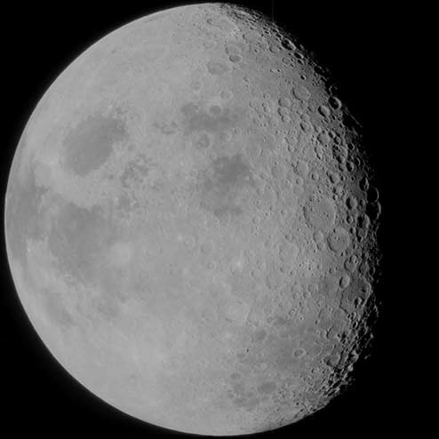

The moon
The Moon (in Greek: σελήνη Selene, in Latin: Luna) is Earth's only natural satellite. It is one of the largest natural satellites in the Solar System, and, among planetary satellites, the largest relative to the size of the planet it orbits (its primary). It is the second-densest satellite among those whose densities are known (after Jupiter’s satellite Io).
The Moon is thought to have formed approximately 4.5 billion years ago, not long after Earth. There are several hypotheses for its origin; the most widely accepted explanation is that the Moon formed from the debris left over after a giant impact between Earth and a Mars-sized body called Theia.